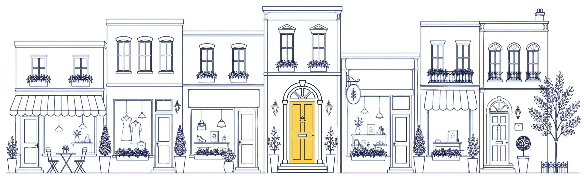
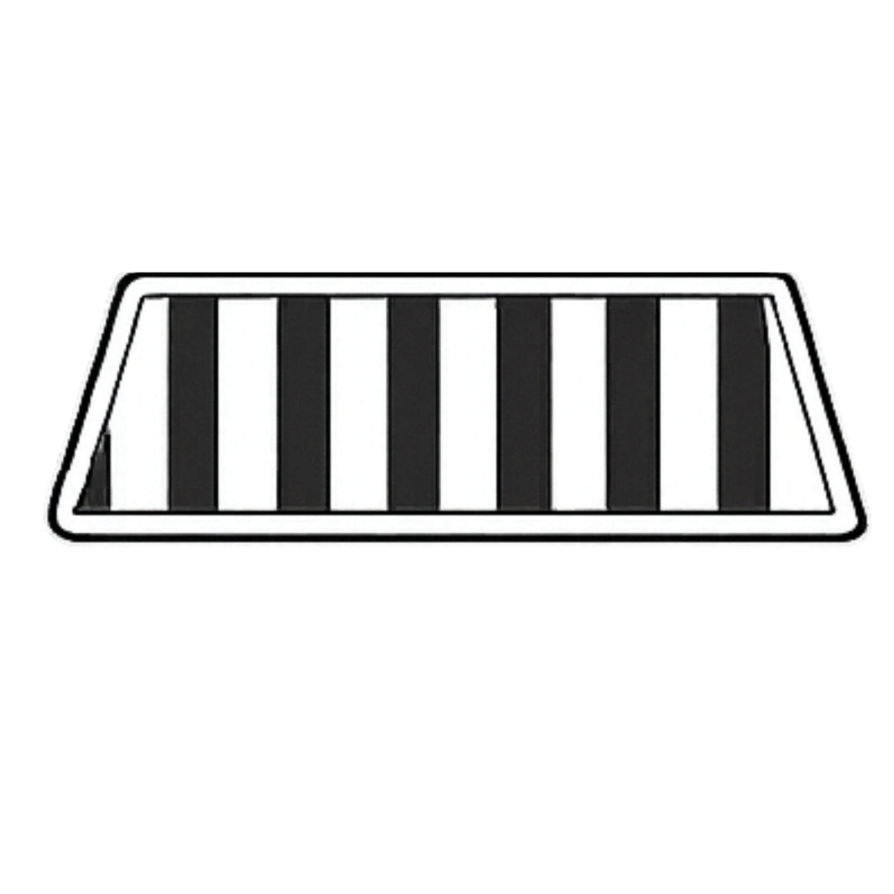

What We Do
Five stops.One connected path.
We are not here to make your business louder for the sake of it. We want your ads to work, your content to feel like you, and your campaigns to bring the right people closer. But before any of that, we look at what people find when they already have it.
Five connected parts of the customer-facing experience. Click through the stops to see where we work — and what a stronger experience looks like from the inside.
Click any stop or use the arrows to move through.



Stop 1 of 5
The First Look
Before they come closer
Voice, listings, bios, short descriptions, and the places people encounter your business before they ever reach your website.